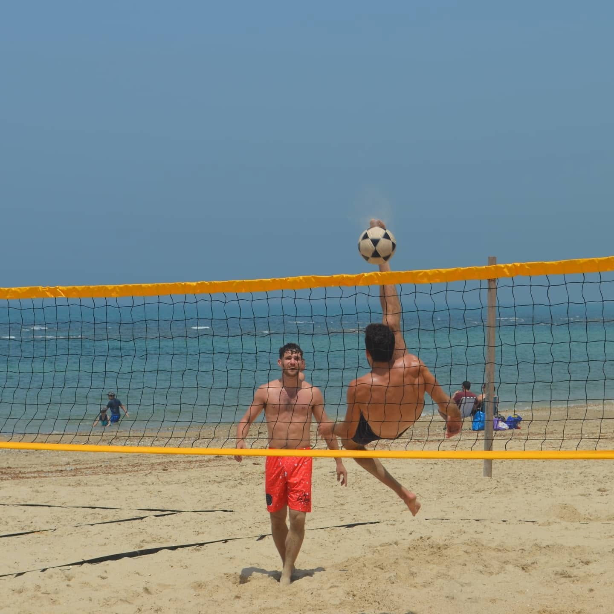
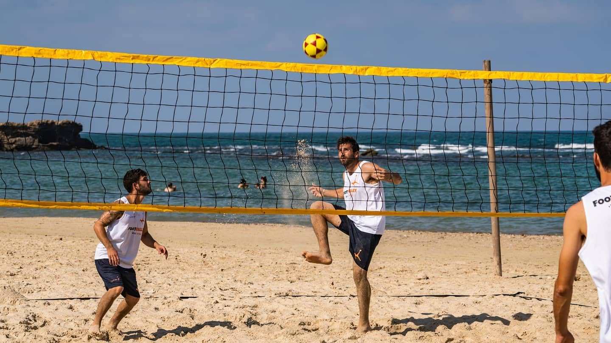
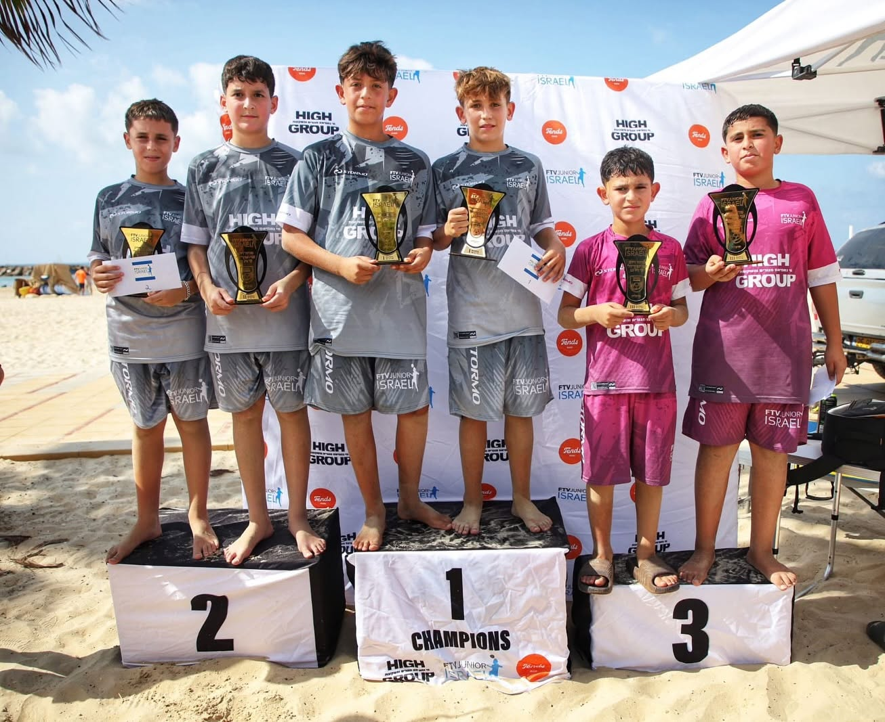

FOOTVOLLEY
הספורט שכובש את עמק חפר
שחר בן חמו, שגדל על מגרשי הכדורסל בעמק, חזר הביתה בתקופת הקורונה עם ענף ספורט חדש וחזון גדול. חמש שנים אחרי שהקים את מועדון הפוצ'יוולי בעמק חפר, עם כ־200 ילדים שמתאמנים בו, אליפויות והישגים ארציים מרשימים וקבוצות בוגרים בצמרת, הוא כבר מכוון הרבה יותר רחוק
אם תעברו בחוף ותראו אנשים מקפיצים כדור ברגליים ובראש, אל תתפלאו אם תגלו שבמרחק לא גדול משם מישהו כבר משחק את המשחק הזה על רשת, במסגרת תחרותית לכל דבר. קוראים לזה פוצ'יוולי, ענף שנולד בחופי ברזיל ומשלב בין כדורגל לכדורעף חופים, והוא צובר תאוצה מרשימה בעמק חפר.
מי שעומד מאחורי התפתחות הענף באזור הוא שחר בן חמו מחופית, מייסד ומנהל מועדון הפוצ'יוולי בעמק חפר. מה שהתחיל כרעיון שנולד בתקופה של חוסר ודאות, הפך בתוך שנים ספורות למועדון עם קבוצות ילדים ונוער, פעילות בבתי ספר ובכפרי נוער, השתתפות בתחרויות בארץ ובעולם, כולל זכיות במקומות הראשונים, וגם קבוצות בוגרים שרושמות הישגים מרשימים.
בן חמו גדל בחופית, ומגיל הגן ועד סוף התיכון שיחק כדורסל באזור, כולל בקבוצות הבוגרים. אחרי הצבא עבר לתל אביב, סיים תואר ראשון בכלכלה ומנהל עסקים ועבד במשך שנים בתחום התיירות בחו״ל, בניהול מסגרות תיירות בקפריסין עבור משפחות וצעירים. ואז הגיעה הקורונה.
״זו הייתה הפעם הראשונה, אחרי שש שנים, שבה מצאתי את עצמי נשאר בארץ כל הקיץ, בלי עבודה״, הוא מספר. הוא החליט לחזור הביתה, לעמק חפר, ולחשוב על כיוון חדש. הוא נרשם לקורס מדריכים בווינגייט, ובמקביל התחיל להתאהב בענף ספורט שלא היה מוכר עדיין לרבים בישראל.
ההיכרות הראשונית שלו עם הפוצ'יוולי הייתה עוד קודם לכן, דרך חברים מהאזור ששיחקו בתל אביב. בתקופת הקורונה הוא חזר לשחק, הכיר את הענף מקרוב והתאהב בו. השילוב בין ספורט, ים וחוף דיבר אליו מיד. החזון שלו היה גדול כבר מההתחלה: להקים בעמק מועדון משמעותי שיוכל להצמיח דור של שחקנים ושחקניות, בדיוק כפי שראה שנעשה בקבוצת הכדורסל שבה גדל.
האימונים הראשונים התקיימו בחוף בית ינאי, אבל לא לאורך זמן. בן חמו לקח את הרשת ועבר עם השחקנים לדשא בחופית, ובהמשך נוצר החיבור עם בית חרות, שם החליטו להקים מגרש ייעודי לפוצ'יוולי. אלמוג חן ואבנר אביגדור מוועד היישוב הציעו לבן חמו להוביל את הפעילות ולהתחיל לקיים חוגים לילדים במקום. ״שם הכול באמת התחיל״, הוא אומר, ״שם נוסד מועדון ׳עמק הפוצ׳י׳״.

פוצ'יוולי משוחק על מגרש חול, עם רשת, במתכונת של שני שחקנים מול שני שחקנים. חוקי המשחק דומים לאלה של כדורעף חופים, אבל את הכדור מעבירים מצד לצד באמצעות הרגליים, הראש ושאר חלקי הגוף, למעט הידיים. לכל זוג מותר לגעת בכדור עד שלוש פעמים לפני שמעבירים אותו לצד השני, ואסור לאותו שחקן לגעת בכדור פעמיים ברציפות.
הפוצ'יוולי הוא למעשה פיתוח של תרבות הקפצות הכדור בחוף. בישראל אפשר לראות לא מעט אנשים עומדים במעגל ומקפיצים כדור עם הרגליים והראש; בפוצ'יוולי לוקחים את המיומנות הזאת והופכים אותה למשחק תחרותי על רשת. הוא דורש שליטה בכדור, קואורדינציה, זריזות, תנועה נכונה על החול, תזמון ועבודת צוות. הוא לא קל למתחילים, אבל לדברי בן חמו, מי שמוכן להגיע עם ראש פתוח ולהתמיד עשוי לגלות ענף ממכר במיוחד.
המועדון התרחב בהדרגה. לצד החוגים לילדים, בן חמו החל לעבוד גם עם כפר הנוער מבואות ים במכמורת, ובהמשך התקיימו פעילויות בכפרי נוער נוספים. הוא מספר על טורנירים שהפגישו קבוצות ממסגרות שונות ועל מסורת שהתגבשה סביב ליגת הפוצ'יוולי בקיץ במכמורת, בשיתוף המועצה.
״רצינו ליצור מועדון במובן המלא של המילה: מקום שיש בו שחקנים, מאמנים, ילדים, נוער, בוגרים, תחרויות, אירועים וחיבור לקהילה״. עמק חפר, הוא אומר, הוא סביבה כמעט טבעית לענף כזה: החוף, החול, תרבות הספורט והקהילתיות המקומית מתחברים אליו היטב.
היום, בתום חמש שנות פעילות, המועדון מונה כ־200 ילדים מתאמנים. לצד פעילות לילדים ולנוער מתקיימים אימונים לבוגרים, מחנות אימונים, ימים פתוחים, טורנירים ומסגרות תחרותיות. בקיץ 2026 התקיימה ליגת הקיץ עם קטגוריות גיל שונות וקטגוריית בוגרים, לצד פעילויות ואירועים נוספים במכמורת וביישובי האזור. המועדון גם קיים מחנות אימונים עם אנשי מקצוע ומאמנים מהעולם הברזילאי, שממנו מגיע הענף.
יש למועדון כבר הישגים מרשימים. באליפות הארץ האחרונה שבה השתתפו, זכו שחקני המועדון במקום הראשון בקטגוריות עד גיל 13 ועד גיל 16, ובמקום השני בקטגוריית עד גיל 19. במקביל, קבוצות הבוגרים משחקות בליגות הבכירות, ובעונה האחרונה זכו קבוצות המועדון באליפות הארץ הן בליגה הראשונה והן בליגה השנייה. לצד התחרויות בישראל, הענף מתפתח גם בעולם. המועדון משתתף בפעילות תחרותית בין־לאומית, ובן חמו שואף להקים נבחרת מועדון שתורכב מהשחקנים והשחקניות הטובים ביותר ותוכל להתמודד על מקומות בסבבים בין־לאומיים.

על הפודיום. אליפויות ארציות בקטגוריות הגיל הצעירות, ובליגות הבוגרים.
עבור בן חמו, ההישגים האלה הם לא רק סיבה לחגיגה, אלא חלק מתוכנית ארוכת טווח. ״חשוב שהילדים יראו את האופק״, הוא מסביר. ״שהם לא רק יתאמנו ויתחרו, אלא שידעו שיש להם לאן לשאוף; הילדים שגדלים אצלנו יכולים להגיע לקבוצות הבוגרים, ולשחק גם בהן ברמות הכי גבוהות״.
כשאני שואלת למה דווקא בעמק חפר הפוצ'יוולי נקלט כל כך טוב, בן חמו לא מהסס: ״העמק שלנו הוא עמק של ספורט״, הוא אומר בגאווה.
הוא עצמו גדל כאן, מכיר את התרבות הספורטיבית המקומית ורואה בה חלק מהאופי של האזור. מבחינתו, ילדים שגדלים בסביבה שבה ספורט הוא חלק מהחיים מגיעים עם פתיחות לענפים חדשים ועם מנטליות של ספורטאים. הפוצ'יוולי מציע להם הזדמנות להתנסות במשהו אחר, שמחבר בין הפעילות הגופנית שהם מכירים לבין האווירה המשוחררת של החוף.
גם המעבר של בן חמו מעולם התיירות לעולם האימון התברר כטבעי יותר מכפי שציפה. לאורך השנים הוא עבד עם ילדים בקייטנות כדורסל וכדורגל, הדריך חיילים והיה אחראי על קבוצות של משפחות וצעירים במסגרת עבודתו בתיירות. כשנכנס לתפקיד המאמן, גילה שהוא נהנה להעביר ידע, להסביר, ללוות ולקדם ילדים ושחקנים. כיום הוא רואה את תפקידו כרחב הרבה יותר מאימון טכני: הספורט הוא מסגרת שמאפשרת לילדים לצאת מהבית, לפגוש חברים, ללמוד להתמיד ולהרגיש חלק מקבוצה.
כששואלים את בן חמו מה מספק אותו במיוחד במועדון, הוא לא מתחיל לדבר על מדליות או על אליפויות, הוא מדבר על הילדים שמתמידים. יש במועדון שחקנים שהתחילו להתאמן בכיתה ג' והיום הם כבר בתיכון. לראות אותם גדלים, משתפרים, ממשיכים להגיע ונהנים מהמשחק, זו מבחינתו אחת ההצלחות הגדולות ביותר.
״זה ממלא אותי״, הוא אומר. ״אתה רואה ילדים שהגיעו בלי לדעת לזוז על החול, ועם הזמן הם מתאמנים, מאמצים אורח חיים ספורטיבי ומשתנים. יש הורים שמספרים לי שהילד שהיה כל היום במסכים פתאום לא נמצא בבית, כי הוא הולך להתאמן. הם רואים את השינוי הגדול שזה עושה לילדים״.
יש גם קשר מיוחד שנוצר בפוצ'יוולי בין שני השחקנים שמשתפים פעולה על המגרש. בניגוד לענפים קבוצתיים רבים, כאן כל משחק מתקיים בין זוג לזוג. המועדון הוא המסגרת הרחבה, אבל בתחרות השחקן תלוי במידה רבה בפרטנר שלו. הוא צריך ללמוד לתקשר, לסמוך עליו, להתמודד עם הפסדים ולא להישבר כשדברים לא הולכים כמתוכנן.
״אתה בא לשחק עם הפרטנר שלך ואתה מבטיח לו שאתה עולה איתו למגרש לאורך כל השנה. גם כשלא הולך טוב, אתה לא מוותר ולא נשבר, אלא מנסה למצוא פתרונות. גם כשמפסידים נשארים ביחד עד שמצליחים. התמדה היא שם המשחק״, מסביר בן חמו.
חשוב לציין שהפוצ'יוולי אינו מיועד לבנים בלבד. במועדון פועלות קבוצת בנות בבית חרות וקבוצת נשים בקיסריה, ויש גם נשים שמתאמנות בקבוצות עם גברים.
החזון של המועדון הוא להמשיך לפתח את הפוצ'יוולי בעמק חפר וליצור מקום שיש בו מסלול לכל אחד. ״מי שרוצה להתקדם מקצועית, יוכל להתאמן מגיל צעיר ולהשתתף בתחרויות ארציות ובין־לאומיות. אבל לא כל ילד צריך להפוך לשחקן תחרותי. חשוב לא פחות ליצור מסגרת שבה ילדים ובני נוער מגיעים ליהנות, להיות עם חברים, להרגיש חלק מקבוצה, להתחבר לקהילה ולפתח אהבה לספורט״, מסביר בן חמו. לדבריו, הוא רוצה להרחיב את הפעילות ביישובי עמק חפר והסביבה ובבתי הספר, להכניס עוד ילדים ונוער לענף ולהמשיך לפתח גם את הצד המקצועי וגם את הצד הקהילתי. חלק משמעותי מהחזון הוא החיבור לברזיל, מולדת הפוצ'יוולי; בן חמו רוצה להביא לאזור ידע, מאמנים ומתודולוגיות אימון ברמה גבוהה, ובמקביל לאפשר לשחקנים שמעוניינים בכך להיחשף לספורט במחנות אימונים ובתחרויות בחו״ל.
החלום הגדול שלו נוגע כבר לבמה העולמית: ״החזון הוא שהילדים שלנו יביאו מדליה באולימפיאדה!״ אומנם הפוצ'יוולי עדיין אינו ענף אולימפי, אבל בן חמו מסתכל קדימה על התפתחות הענף המהירה, באמונה גדולה. ובכלל, אחרי חמש שנים של בנייה, הוא כבר יודע שהדרך למעלה מורכבת מהמון צעדים קטנים: עוד אימון, עוד ילד שמגיע בפעם הראשונה, עוד שחקן שמגלה שהוא מסוגל, ועוד זוג שלומד לא לוותר זה על זה.
גילוי נאות: שני בניו של עורך ״עלי חפר״, אלעד וינגרד, מתאמנים במועדון הפוצ'יבולי של העמק